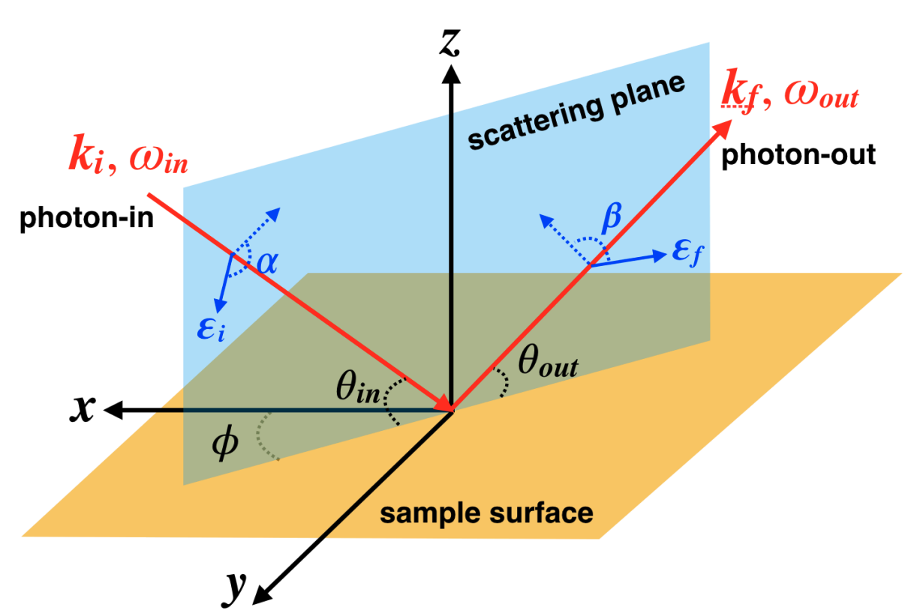

Conventions
This page summarizes the conventions used in EDRIXS: units and naming, orbital orderings and single-particle bases, Fock-state encoding, and the geometry, polarization, and broadening used to calculate spectra. The Introduction to EDRIXS describes the interface, and the pedagogical examples explore the underlying physics in more detail.
Energies and naming
Electron and hole language. EDRIXS uses electron language by default.
Units. All energies are in eV.
Initial and intermediate states. Throughout EDRIXS, an
_isuffix labels the initial and final states, which have no core hole, while_nlabels the intermediate state, which has one. Thus,emat_i,umat_i,basis_i, andhmat_idescribe the problem without a core hole, whileemat_n,umat_n,basis_n, andhmat_ndescribe the problem with a core hole.Coulomb interactions. These interactions are parameterized using Slater integrals. EDRIXS provides Hartree-Fock values for these integrals through
get_atom_data()and conversions between Slater integrals and the common \(U\), \(J\), \(U_d\), and \(J_H\) parameterizations through functions such asUdJH_to_F0F2F4()andF0F2F4_to_UdJH(). The Hartree-Fock values are usually scaled down to 70-90% of their atomic values to approximate screening in the solid.Core-level energies. The absolute energy of a core level is not defined by the calculation. The resonance position is set through
shell_level(orc_level) together with an offset chosen to match experiment.
Core orbitals and energy shifts
EDRIXS model constructors include the core orbitals in the initial Fock space. Because these orbitals are fully occupied, including them changes the state labels without increasing the number of states. This convention avoids the energy corrections needed when filled core orbitals are omitted and simplifies the construction of transition operators.
Numerical diagonalization can lose precision when the diagonal entries have a
large common energy offset.
For this reason, model constructors also return an energy offset, shift.
It is the number of core spin-orbitals multiplied by their common shell-level
energy, excluding Coulomb and spin-orbit contributions. For example,
model_1v1c(('d', 'p'), shell_level=(0.0, -857.6)) returns
shift = 6 * (-857.6) eV. It is zero when the core shell level is zero.
Passing it to ed() with the dense, SciPy, or PETSc backend subtracts
the offset from the Hamiltonian diagonal before diagonalization and restores
it to the returned eigenvalues. This preserves the physics while reducing
numerical errors caused by subtracting large, nearly equal numbers.
When computing XAS or RIXS, the relevant resonant denominator is absorbed
into the matrix prior to the matrix operations, so a separate shift is
not needed.
Default orbital ordering and single-particle bases
Unless specified otherwise, EDRIXS uses these orderings.
Spin: interleaved,
up, dn, up, dn, ....Complex spherical harmonics \(Y_l^m\):
m = -l, -l+1, ..., l-1, l.Real spherical harmonics (the Wannier90 ordering):
p: \(p_x, p_y, p_z\)d: \(d_{3z^2-r^2}, d_{xz}, d_{yz}, d_{x^2-y^2}, d_{xy}\)t2g: \(d_{xz}, d_{yz}, d_{xy}\)f: \(f_{z^3}, f_{xz^2}, f_{yz^2}, f_{z(x^2-y^2)}, f_{xyz}, f_{x(x^2-3y^2)}, f_{y(3x^2-y^2)}\)
\(\lvert j, j_z \rangle\) basis (SOC diagonal): the \(j = l-1/2\) block first, then the \(j = l+1/2\) block, each ordered \(-j, -j+1, ..., j\).
The default single-particle basis used to define the Fock basis is:
complex spherical harmonics for
p,d, andf, and an effective \(l=1\) complex basis fort2g;the \(\lvert j, j_z \rangle\) basis for
p12,p32,d32,d52,f52, andf72.
The three t2g orbitals are represented using an effective \(l=1\)
space, like a p shell. In EDRIXS’s transformation convention,
(d_xz, d_yz, d_xy) correspond to (p_y, p_x, p_z). Thus the p and
t2g change-of-basis matrices differ by the order of their first two real
orbitals. The t2g orbitals remain a subset of the physical \(d\) shell:
the projected orbital angular momentum has the opposite sign to an ordinary
\(l=1\) shell, as accounted for by EDRIXS’s t2g spin-orbit and
orbital-field terms. Use tmat_c2r('t2g') for this effective three-orbital
space and tmat_c2r('d') for the full five-orbital shell.
Helper functions that return matrices or tensors – get_umat_slater,
get_trans_oper, cf_cubic_d, cf_tetragonal_d, and
cf_trigonal_t2g, for example – return them in this default basis.
Important
You may express emat and umat in any single-particle basis,
but everything entering the Hamiltonian must be expressed in that
same basis. Transform one-body matrices with
cb_op() and Coulomb tensors with
transform_utensor(). The recommended
practice is to keep the default basis and only transform the extra matrices
you supply (for example, a crystal-field matrix) into it. cb_op applies
Use T = edrixs.tmat_c2r('d', ispin=True) to transform from complex to
real harmonics, or edrixs.tmat_r2c for the reverse transformation.
Fock basis
A Fock state specifies which single-particle spin-orbitals contain electrons. Each orbital is either occupied (1) or empty (0). EDRIXS stores this string as an integer, with orbital indices running from right to left in its binary representation: orbital 0 is the rightmost, least significant bit.
For example, two electrons in orbitals 0 and 2 of a four-orbital space give
binary 0101, or integer 5 = 2**0 + 2**2. If written as an occupation
list indexed by orbital, the same state is [1, 0, 1, 0]: such a list starts
with orbital 0 on the left. The integer labels a configuration; its position
in the basis determines the corresponding matrix row or column.
When a model contains core orbitals, all valence spin-orbitals precede them in orbital index. The initial basis includes a filled core, and the intermediate basis includes one core hole.
FockBasisSpec describes the allowed configurations
without listing them. Supply (norb, nocc) pairs to from_args, one per
group with a fixed electron count. norb counts spin-orbitals, and nocc
counts electrons. For ionic Ni \(3d^8\) with a \(2p\) core:
basis_i = edrixs.FockBasisSpec.from_args(10, 8, 6, 6) # 3d^8 2p^6
basis_n = edrixs.FockBasisSpec.from_args(10, 9, 6, 5) # 3d^9 2p^5
There is one pair per fixed-occupancy group, which need not be a physical
shell. model_2v1c combines both valence shells into one group so electrons
can move between them; it uses two pairs (combined valence, core), rather than
three independently fixed shell occupations. Anderson impurity models likewise
group impurity and bath orbitals together.
For a single group, get_fock_basis_int() returns the
integer-encoded basis directly. build_op() and
get_ops() accept either a specification or a realized basis.
Spectral conventions


Scattering geometry. thin and thout are
\(\theta_{in}\) and \(\theta_{out}\); phi is \(\phi\).
Linear polarization angles correspond to \(\alpha\) and \(\beta\).
Geometry follows Figure 1 of Y. Wang et al., Comput. Phys. Commun. 243, 151 (2019). The incident and scattered beam angles are set by
thinandthout, and the azimuth byphi. All angles are in radians and relative to the sample axes. By default, the crystal-field \(x, y, z\) axes coincide with the lab frame; useloc_axis(model) orscatter_axis(solver) to change this.Polarization is given as a list of channels. For XAS, each entry is
(kind, angle)withkindone of'linear','left','right'or'isotropic'(the last for powders). For RIXS each entry is a 4-tuple(in_kind, in_angle, out_kind, out_angle), where each kind is'linear','left', or'right'; sum the two outgoing channels when the experiment does not resolve emitted polarization.'isotropic'is not supported for RIXS and is rejected with a warning.Broadening is a Lorentzian half width at half maximum.
gamma_cis the inverse core-hole lifetime (it dominates XAS and the incident-energy axis of RIXS);gamma_fis the final-state or resolution width on the RIXS energy-loss axis.gamma_cmay be a scalar or an array with the same shape asominc;gamma_fmay be a scalar or an array with the same shape aseloss.Temperature (in K) sets Boltzmann weights over the retained low-energy initial states, so
num_evalsinedmust be large enough to cover all thermally populated states.Returned array shapes:
xashas shape(len(ominc), len(pol_type));rixshas shape(len(ominc), len(eloss), len(pol_type)).
The widths enter directly as \(\gamma\), without a factor of one half. For example, an XAS line at excitation energy \(\Delta E\) has the form
Its full width at half maximum is \(2\gamma_c\). The RIXS intermediate resolvent contains \(\omega_{in}+E_i-H_n+i\gamma_c\), and its energy-loss lines use the same Lorentzian with \(\gamma_f\) (full width \(2\gamma_f\)).